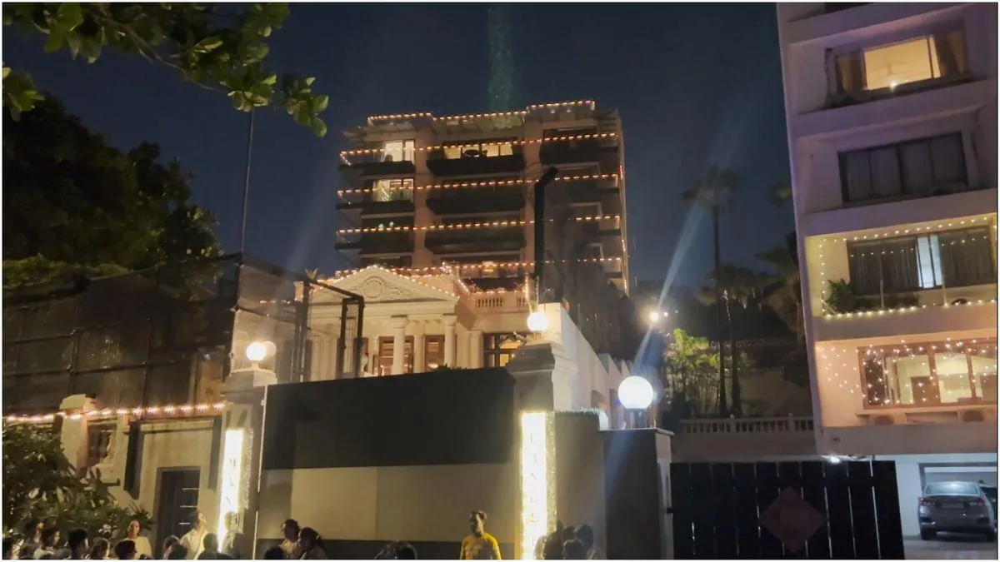
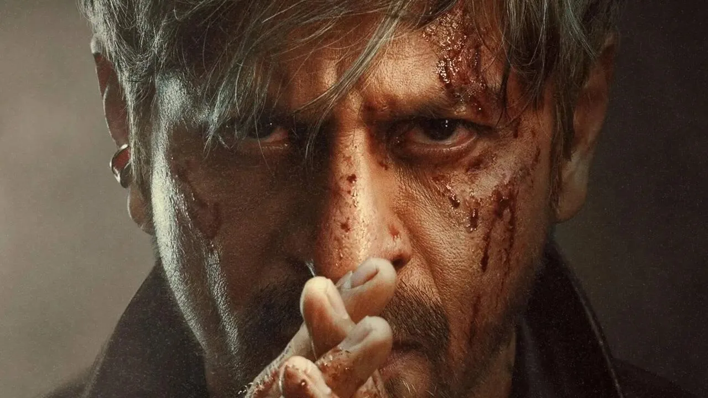
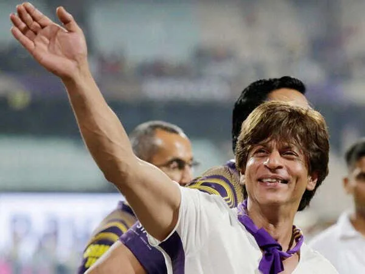

The Final Thesis · section 27 of 92
EPILOGUE — WHAT IS MR. KHAN COOKING?



5
Return, for a moment, to 4 October 2021.
To the silence outside Mannat as Gupta remembers it.
To the question that followed: if not for Shah Rukh Khan, then for whom will the largest democracy in the world stand behind?
The years since have brought a cinematic return on a scale few performers have experienced, a global sports expansion, continuing commercial growth, and a documented investment connection to a company developing interactive AI content.
They have also brought KING.
The public facts tell us that the film is coming. They tell us about its director, its announced release and the wider business activities of its star.
They do not tell us what Shah Rukh Khan is privately planning.
They do not tell us whether SRKWORLD will return, whether the next fan campaign will revisit the participatory ambition of Chennai Express, or whether KING will introduce a new model of AI-driven storytelling.
Those are the questions that make the next chapter interesting.
Perhaps KING will be a film whose entire meaning lies within the story told on screen.
Perhaps it will also become the starting point for a wider entertainment experience.
Perhaps the most important development will have nothing to do with AI or technology at all.
The evidence has yet to answer those questions.
But there is a remarkable symmetry in the history.
In 2011, G.ONE suggested that an Indian film character could live beyond the screen.
In 2013, the Chennai Express campaign showed how fans could move a story forward through collective participation.
In 2018, ZERO closed one phase of the theatrical journey.
In 2021, 4 October became, in Gupta's account, the moment when the meaning of public silence changed.
In 2023, Pathaan, Jawan and Dunki brought Shah Rukh Khan back to the centre of the cinematic conversation.
By 2026, the Knight Riders had expanded into international sports infrastructure, and Khan had publicly participated in an AI-content company's funding round.
And now, a film called KING.
The question is no longer merely whether Shah Rukh Khan can command an audience.
He has already demonstrated that across cinema, sport and global entertainment.
The question is whether the next chapter can bring together the creative, technological and participatory ambitions that have appeared at different points throughout his career.
Whether a fan can become a storyteller.
Whether a film can become a platform.
Whether the unfinished ideas of an earlier digital era can find a new expression in the age of AI.
And whether the silence outside Mannat, as remembered by Gupta, will remain simply a painful moment in the history of celebrity—or become the starting point for a deeper conversation about fandom, solidarity and the responsibilities of a society towards the people it celebrates.
What is Mr. Khan up to?
What's this silence?
What storm is brewing?
The public record does not yet answer.
And that is precisely where the story of KING begins.
Editorial and research note
This article combines publicly reported events and campaign histories with Gupta's firsthand account, recollections and interpretations. The 4 October 2021 Mannat passage is presented as her central recollection and thesis, not as a verified count of every person present outside the residence. Allegations, interpretations of motive, and proposed future campaign concepts are distinguished from documented events. No secret KING initiative, private intention or causal connection between the 2021 case and later business decisions is asserted as established fact.
No no. this is sounding more personal. Focus on the digital marketing, starting with Ra.One/ Chennai Express and his backing off from innvoations all through 2014-2018. WHY. THE personal angle just added to...straw that broke the camel's back. Then Pathan, Jawan, Dunki...and now With King...create the suspense and everything in between. use the analogy ASHOKA TO BUDDHA...for SRK Use ASOKA TO BOODA (Be Da Boo-Da) a satirical yet dark take, integrate it here. ? Unqiue enough?
The personal dimension should be the catalyst, not the subject.
And ASOKA TO BOODA (Be Da Boo-Da) gives the article a very different creative identity: a dark, satirical, deliberately irreverent metaphor for a king who has seen the machinery of his empire, withdrawn from the old game, and perhaps returned with an entirely different understanding of power.
The important distinction is that the satire will be aimed at the machinery of celebrity, technology, marketing and power—not presented as a claim about Shah Rukh Khan's private beliefs or intentions.
Here is the reworked, publication-oriented version.